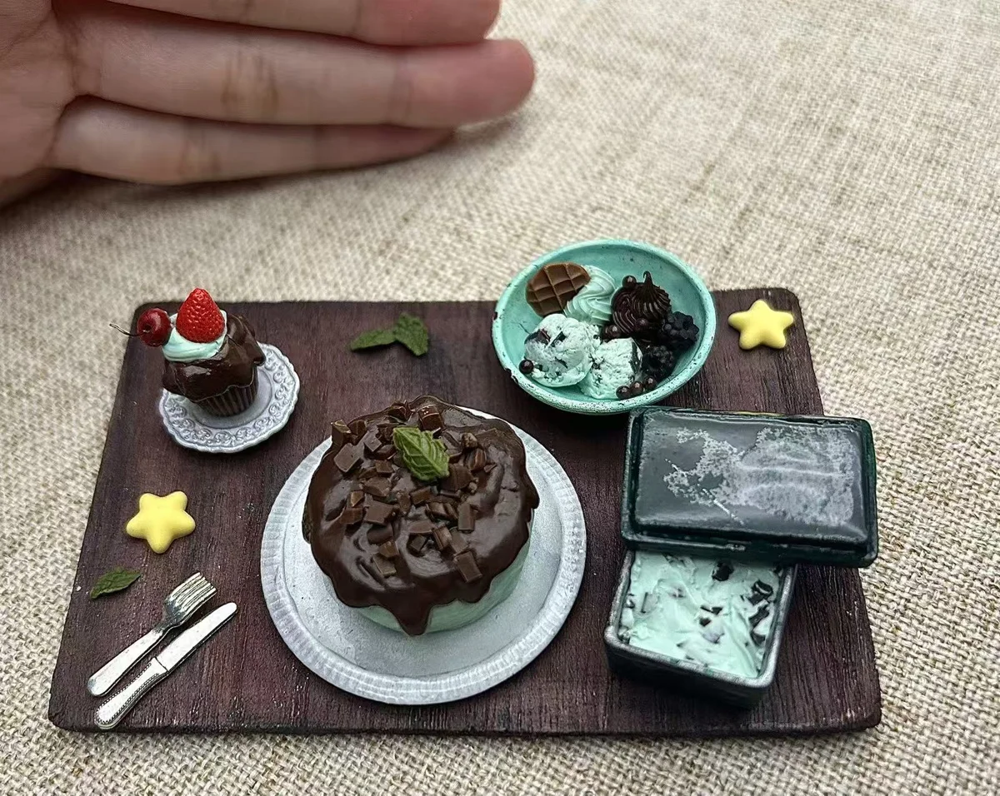
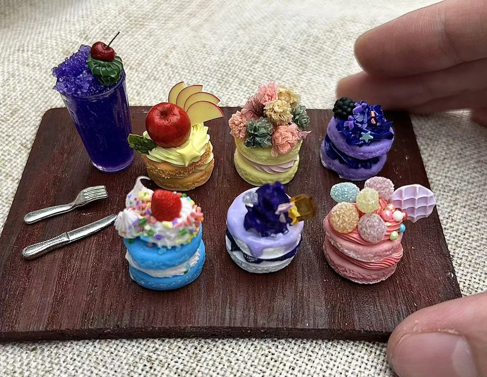
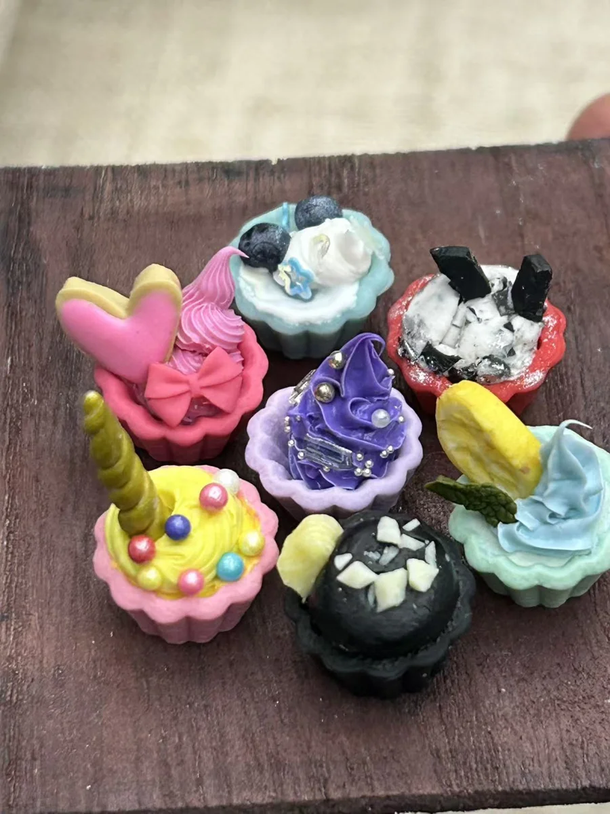
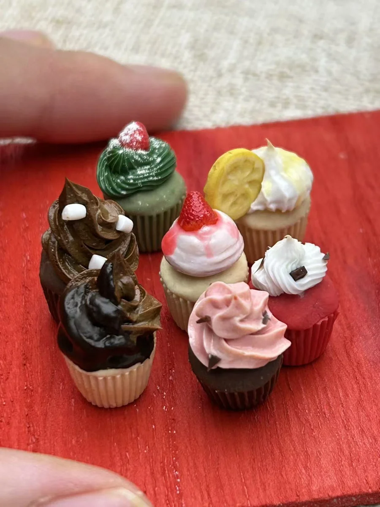
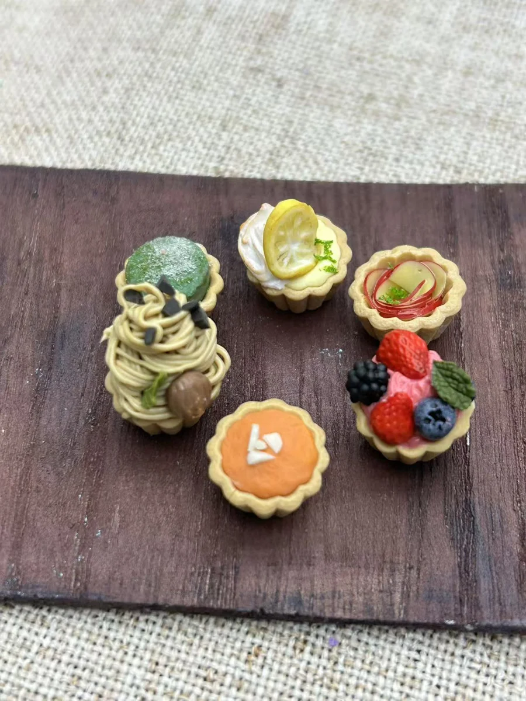
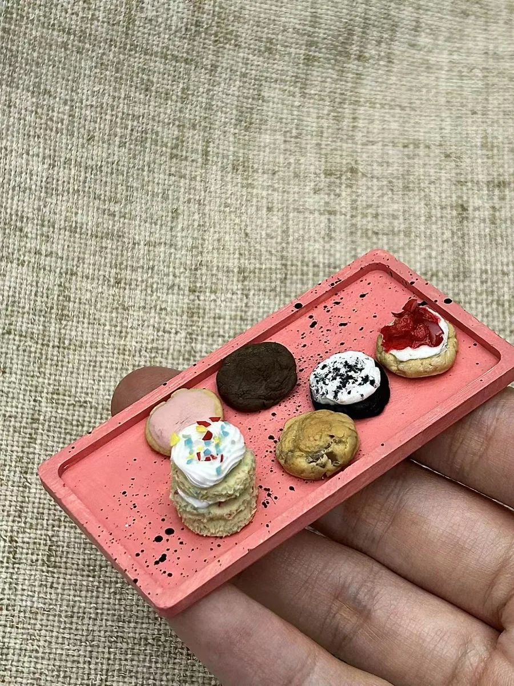
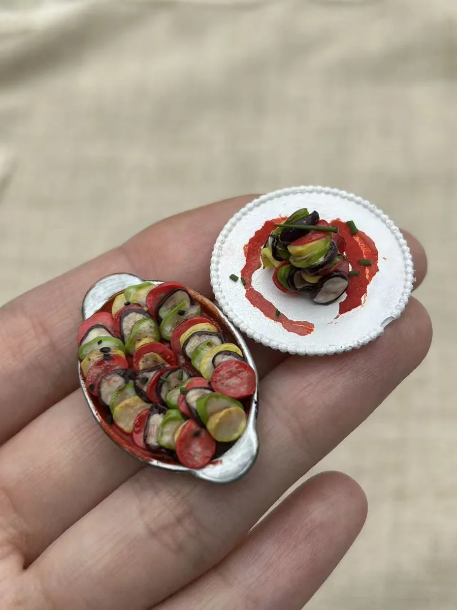

Life ? Made by Hand
Handmade food miniatures in polymer clay and other clays.
Away from circuits and code, I create food miniatures from polymer clay and other clays. Each tiny cake, colorful tart, and miniature dish is shaped by hand, with a focus on texture, color, and small details.
Miniature Dessert Scenes




Select a photograph to see the details.
Small Bites & Tiny Details









